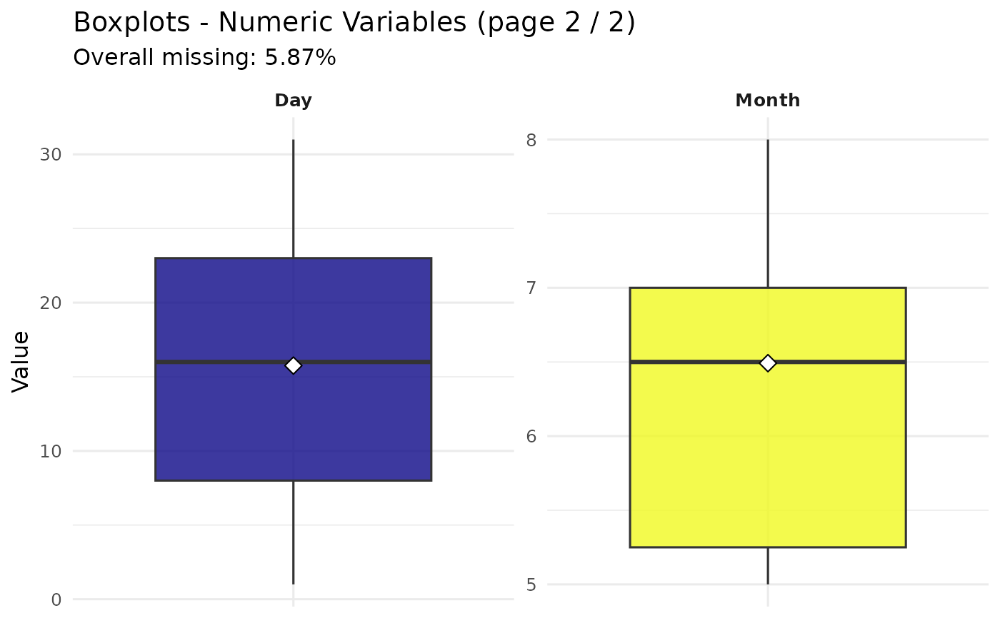
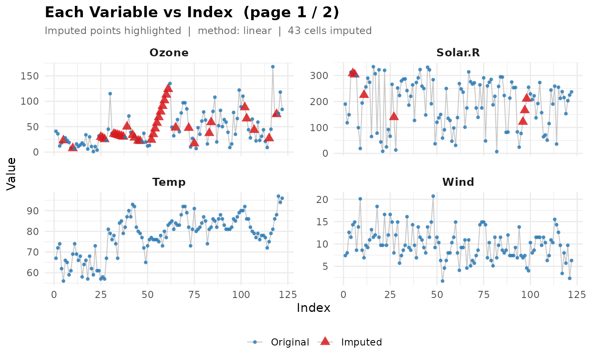
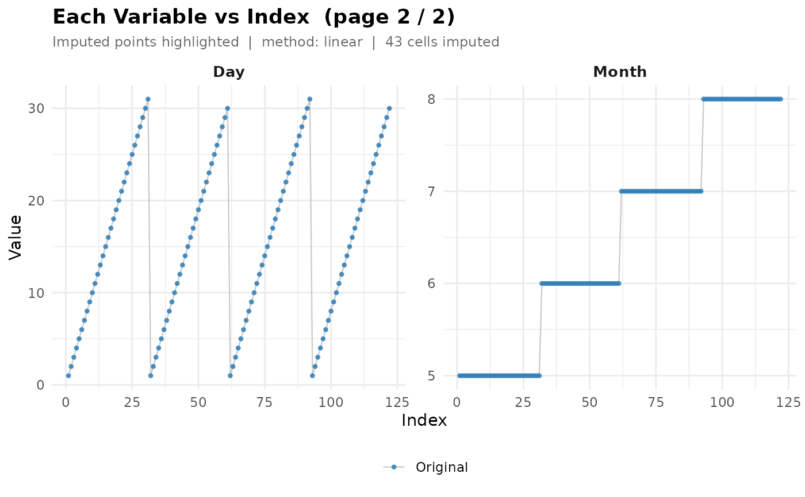
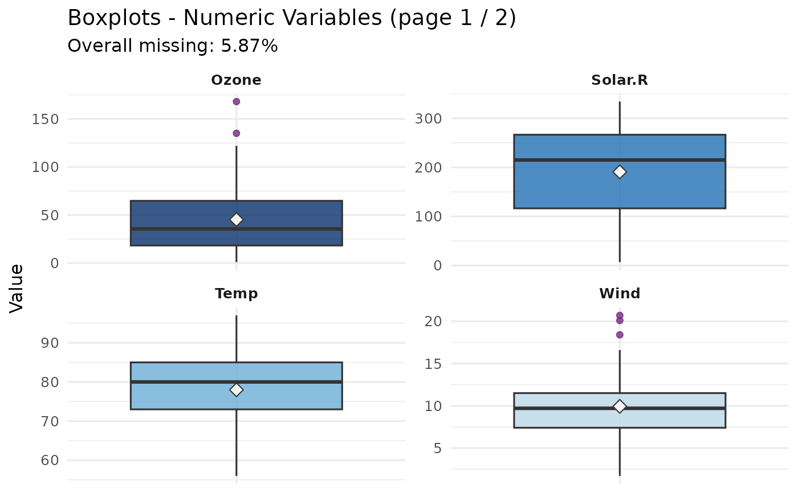

Executes all pipeline steps in order:
standardize_na()- convert custom missing indicators to NAcoerce_numeric()- auto-convert character cols to numericfill_time_gaps()- insert missing timestamps (optional)split_data()- temporal train/test split (before imputation)missing_analysis()- assess missing values on train onlyhandle_missing()- impute/drop train; forward-fill test from train tailvisualize_data()- scatter plots per variable vs indexscale_data()- feature scaling (fit on train only)cross_validate()- k-fold CV on training set (optional)
Usage
ts_preprocess(
data,
na_strings = character(0),
na_numbers = NULL,
min_success_rate = 0.8,
train_ratio = 0.8,
impute_method = "linear",
impute_tail_n = 10L,
scale_method = "auto",
target_col = NULL,
k_folds = 5L,
model_fn = NULL,
model_type = c("lm", "gam", "rf", "dt"),
rf_ntree = 500L,
dt_cp = 0.01,
lags = 1L,
verbose = TRUE
)Arguments
- data
A
data.framewith rows ordered by time.- na_strings
Character vector. Extra strings to treat as
NA, e.g.c("-", "Missing", "N/A"). Built-in defaults already cover common patterns. Defaultcharacter(0).- na_numbers
Numeric vector. Numeric sentinel values to treat as
NA, e.g.c(-999, 9999). DefaultNULL.- min_success_rate
Numeric in (0, 1]. Minimum fraction of non-NA values that must parse as numbers for a character column to be converted to numeric. Default
0.8.- train_ratio
Numeric in (0, 1). Default
0.8.- impute_method
"linear"(default) or"knn".- scale_method
"auto"(default) auto-selects based on outlier detection, or one of"minmax","zscore","robust".- target_col
Character. Response column for cross-validation. If
NULL(default), CV is skipped.- k_folds
Integer. Number of CV folds. Default
5.- model_fn
Optional custom model function for CV.
- model_type
Character. Which built-in default CV model to use when
model_fnisNULL:"lm"(default, plain linear regression),"gam"(smooth/non-linear fit – recommended if the series is expected to be non-linear, e.g. water level or VPD),"rf"(Random Forest), or"dt"(Decision Tree). Passed straight through tocross_validate().- rf_ntree
Integer. Number of trees when
model_type = "rf"(default 500).- dt_cp
Numeric. Complexity parameter when
model_type = "dt"(default 0.01).- lags
Integer vector (or
NULL). Only used in CV's single-variable fallback case (target_colis the only predictor available). Adds lagged copies of the target as extra predictors – e.g.lags = 1(default) adds.lag1, the previous row's value. Passed straight through tocross_validate(); see its docs for details. Set toNULLto disable and fall back to.time_indexonly.- verbose
Logical (default
TRUE).
Value
An invisible list with elements:
data_cleanCleaned data.frame.
trainUnscaled training set.
testUnscaled test set.
train_scaledScaled training set – ready for modelling.
test_scaledScaled test set.
scale_paramsScaling parameters (fitted on train only).
scale_methodScaling method used.
missing_reportPer-variable NA summary table.
imputation_reportString describing the action taken.
cv_summaryCV summary data.frame, or NULL if skipped.
cv_foldsPer-fold CV results, or NULL if skipped.
cv_model_typeWhich CV model was used (
"custom"ifmodel_fnwas supplied), or NULL if CV was skipped.plotsNamed list: boxplot, scatter.
before_afterBefore/after imputation sample, or NULL.
Examples
data(airquality)
# Basic usage
result <- ts_preprocess(
data = airquality,
train_ratio = 0.8,
scale_method = "minmax"
)
#>
#> ============================================================
#> atspR | Automated Time Series Preprocessing
#> ============================================================
#>
#> Input : 153 rows, 6 cols | Train/Test: 80%/20% | Impute: linear | Scale: minmax
#> CV : target = none (skipped), k = 5, model = LM
#> ------------------------------------------------------------


#> Warning: Using `size` aesthetic for lines was deprecated in ggplot2 3.4.0.
#> ℹ Please use `linewidth` instead.
#> ℹ The deprecated feature was likely used in the atspR package.
#> Please report the issue at
#> <https://github.com/example/Automated-Time-Series-Preprocessing-in-R/issues>.


#> [1/8] Standardise NA indicators -- done
#>
#> [2/8] Coerce character cols to numeric -- done
#>
#> [3/8] Train / Test Split (before imputation)
#> Train: 122 rows (80%) | Test: 31 rows (20%)
#>
#> [4/8] Missing Value Analysis (train only)
#> 5.87% | 2 / 6 cols | IMPUTE (LINEAR) -- missing = 5.87% > 5% threshold
#>
#> [5/8] Handle Missing Values (train)
#> 43 cells imputed [Ozone:36 Solar.R:7]
#>
#> [6/8] Handle Missing Values (test -- forward-fill from train tail)
#> 1 NA cells filled | tail_n = 10 rows used
#>
#> [7/8] Visualise
#> 2 scatter page(s) generated
#>
#> [8/8] Feature Scaling [MINMAX]
#> Columns scaled : 6 (Ozone, Solar.R, Wind, ...)
#> Outliers : Wind(2.5%) Ozone(1.6%)
#> [!] Outlier(s) detected but method = "minmax" was forced
#> -> set scale_method = "auto" or "robust" to handle correctly
#>
#> ------------------------------------------------------------
head(result$train_scaled)
#> Ozone Solar.R Wind Temp Month Day
#> 1 0.23952096 0.5596330 0.3000000 0.2682927 0 0.00000000
#> 2 0.20958084 0.3394495 0.3315789 0.3902439 0 0.03333333
#> 3 0.06586826 0.4342508 0.5736842 0.4390244 0 0.06666667
#> 4 0.10179641 0.9357798 0.5157895 0.1463415 0 0.10000000
#> 5 0.13173653 0.9215087 0.6631579 0.0000000 0 0.13333333
#> 6 0.16167665 0.9072375 0.6947368 0.2439024 0 0.16666667
# With custom NA indicators
result <- ts_preprocess(
data = airquality,
na_strings = c("-", "Missing"),
na_numbers = c(-999),
scale_method = "minmax"
)
#>
#> ============================================================
#> atspR | Automated Time Series Preprocessing
#> ============================================================
#>
#> Input : 153 rows, 6 cols | Train/Test: 80%/20% | Impute: linear | Scale: minmax
#> CV : target = none (skipped), k = 5, model = LM
#> ------------------------------------------------------------



 #> [1/8] Standardise NA indicators -- done
#>
#> [2/8] Coerce character cols to numeric -- done
#>
#> [3/8] Train / Test Split (before imputation)
#> Train: 122 rows (80%) | Test: 31 rows (20%)
#>
#> [4/8] Missing Value Analysis (train only)
#> 5.87% | 2 / 6 cols | IMPUTE (LINEAR) -- missing = 5.87% > 5% threshold
#>
#> [5/8] Handle Missing Values (train)
#> 43 cells imputed [Ozone:36 Solar.R:7]
#>
#> [6/8] Handle Missing Values (test -- forward-fill from train tail)
#> 1 NA cells filled | tail_n = 10 rows used
#>
#> [7/8] Visualise
#> 2 scatter page(s) generated
#>
#> [8/8] Feature Scaling [MINMAX]
#> Columns scaled : 6 (Ozone, Solar.R, Wind, ...)
#> Outliers : Wind(2.5%) Ozone(1.6%)
#> [!] Outlier(s) detected but method = "minmax" was forced
#> -> set scale_method = "auto" or "robust" to handle correctly
#>
#> ------------------------------------------------------------
#> [1/8] Standardise NA indicators -- done
#>
#> [2/8] Coerce character cols to numeric -- done
#>
#> [3/8] Train / Test Split (before imputation)
#> Train: 122 rows (80%) | Test: 31 rows (20%)
#>
#> [4/8] Missing Value Analysis (train only)
#> 5.87% | 2 / 6 cols | IMPUTE (LINEAR) -- missing = 5.87% > 5% threshold
#>
#> [5/8] Handle Missing Values (train)
#> 43 cells imputed [Ozone:36 Solar.R:7]
#>
#> [6/8] Handle Missing Values (test -- forward-fill from train tail)
#> 1 NA cells filled | tail_n = 10 rows used
#>
#> [7/8] Visualise
#> 2 scatter page(s) generated
#>
#> [8/8] Feature Scaling [MINMAX]
#> Columns scaled : 6 (Ozone, Solar.R, Wind, ...)
#> Outliers : Wind(2.5%) Ozone(1.6%)
#> [!] Outlier(s) detected but method = "minmax" was forced
#> -> set scale_method = "auto" or "robust" to handle correctly
#>
#> ------------------------------------------------------------